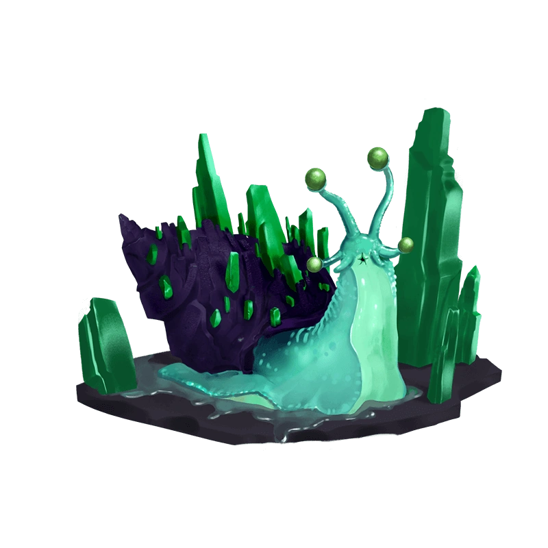

<nav class="w-full h-22 shadow-2xl flex text-right items-center justify-between py-2 shadow-md bg-white absolute px-5 z-50">
    <span class="rounded-full bg-teal-50 hover:bg-teal-400 cursor-pointer" routerLink="/home"></span>
    <div class="flex items-center justify-center">
        <div class="w-30 text-xs font-medium text-slate-500 mr-8 flex items-center justify-between">
            <svg xmlns="http://www.w3.org/2000/svg" fill="none" viewBox="0 0 24 24" stroke-width="1.5" stroke="currentColor" class="w-5 h-5 mr-1">
        <path
          stroke-linecap="round"
          stroke-linejoin="round"
          d="M2.25 8.25h19.5M2.25 9h19.5m-16.5 5.25h6m-6 2.25h3m-3.75 3h15a2.25 2.25 0 002.25-2.25V6.75A2.25 2.25 0 0019.5 4.5h-15a2.25 2.25 0 00-2.25 2.25v10.5A2.25 2.25 0 004.5 19.5z"
        />
      </svg> R$ 0.90
        </div>
        <button (click)="onSignOut()" type="button" class="inline-flex items-center rounded-md border border-transparent bg-slate-600 px-4 py-2 text-sm font-medium text-white shadow-sm hover:bg-slate-700 focus:outline-none focus:ring-2 focus:ring-slate-500 focus:ring-offset-2">
      Sign out
    </button>
    </div>
</nav>